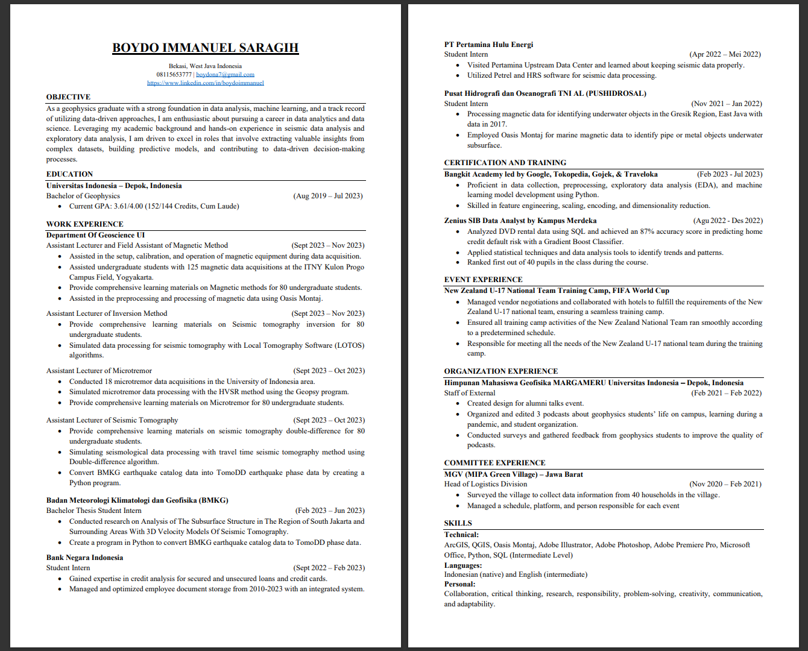
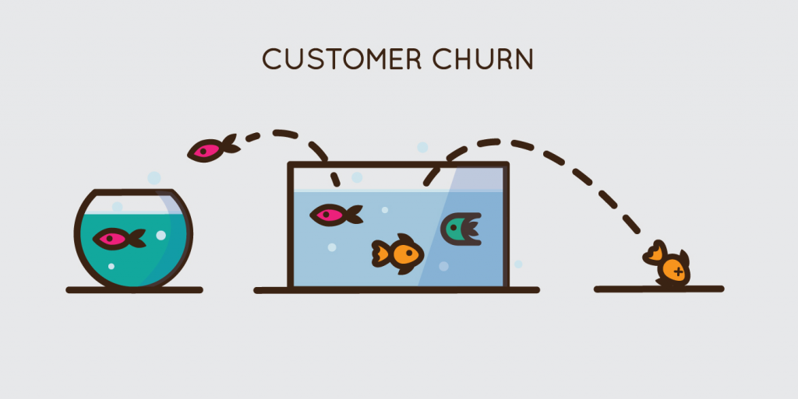

As a geophysics graduate with a strong foundation in data analysis, machine learning, and a track record
of utilizing data-driven approaches, I am enthusiastic about pursuing a career in data analytics and data
science.

Dive into my "HOME CREDIT EDA and Prediction" portfolio, where I conduct Explanatory Data Analysis (EDA) to reveal insightful patterns and utilize a classifier for predicting individuals capable of loan repayment.

Explore my "TELCO CHURN EDA and ML" portfolio, where I analyze telecommunications customer data through Explanatory Data Analysis (EDA) and machine learning, predicting and exploring strategies for customer churn.
Explore my "STROKE EDA and ML" portfolio, where I conduct Explanatory Data Analysis (EDA) to uncover insights within stroke-related data, and leverage machine learning techniques to predict and understand factors contributing to stroke occurrences.
Dive into my "HOUSE PRICES ADVANCE REGRESSION" portfolio, where I employ advanced regression techniques to analyze housing market data, offering insights into the factors influencing property prices..

Explore my "DIABETES ML FOR DISEASES PROGRESSION" portfolio, where I utilize machine learning to predict the progression of diabetes.

Delve into my "TITANIC EDA and Prediction" portfolio, where I analyze the Titanic dataset through Exploratory Data Analysis (EDA) and use predictive modeling to forecast whether individuals survived or experienced fatalities.